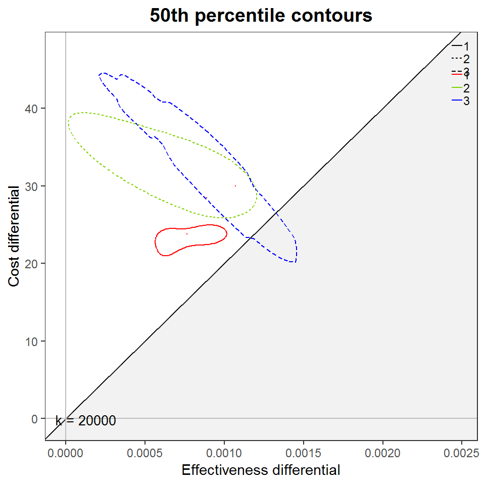

Basic output plots
Nathan Green
2019-01-10
combine_dectree_and_popmodel_output.RmdIntroduction
We combine the cost and health results from the screening, testing and treatment decision tree with the cost and health results from the population model follow-up to defined end-point. We then plot some basic cost-effectiveness planes.
Load packages
library(treeSimR)
library(LTBIscreeningproject)
library(dplyr)
library(data.tree)
library(purrr)
library(tibble)
library(magrittr)
library(plotCostEffectiveness)
library(ggplot2)
library(BCEA)Load in data
Create input matrices
We’re going to use the BCEA package to calculate some additional values and do some of the plotting. In order to use this we need to rearrange some of our data.
# discount due to delay to screening
##TODO: what is actual number?
screen_discount <- 0.9
scenario.names <-
c(0, seq_len(length(dectree_res))) %>%
as.character(.)Cost and QALY gain due to active TB in the population
tb_cost <-
aTB_CE_stats$cost_incur_person %>%
do.call(cbind.data.frame, .) %>%
add_column('0' = 0, .before = 1) %>%
set_names(nm = scenario.names)
tb_QALYgain <-
aTB_CE_stats$QALYgain_person %>%
do.call(cbind.data.frame, .) %>%
add_column('0' = 0, .before = 1) %>%
set_names(nm = scenario.names)Cost and QALY gain due to screening
LTBI_cost <-
purrr::map(dectree_res, "mc_cost") %>%
do.call(cbind.data.frame, .) %>%
multiply_by(screen_discount) %>%
add_column('0' = 0, .before = 1)
LTBI_QALYgain <-
purrr::map(dectree_res, "mc_health") %>%
do.call(cbind.data.frame, .) %>%
multiply_by(-screen_discount) %>%
add_column('0' = 0, .before = 1)
c.total <- as.matrix(LTBI_cost + tb_cost)
e.total <- as.matrix(LTBI_QALYgain + tb_QALYgain)
c.total
#> 0 1 2 3
#> [1,] 0 24.74850 18.91243 32.6694982
#> [2,] 0 26.79049 28.04348 19.3583757
#> [3,] 0 19.21578 32.13803 38.5515465
#> [4,] 0 29.33412 16.03479 25.5289180
#> [5,] 0 20.76630 33.34751 37.5529273
#> [6,] 0 23.04884 33.05360 0.4940197
#> [7,] 0 23.67923 31.80432 47.4834374
#> [8,] 0 22.97351 34.21826 33.5963773
#> [9,] 0 23.72075 41.22143 26.7533256
#> [10,] 0 23.88754 16.02655 37.9299483
e.total
#> 0 1 2 3
#> [1,] 0 0.0009347823 9.327790e-04 9.064694e-04
#> [2,] 0 0.0005963276 9.087446e-04 1.244531e-03
#> [3,] 0 0.0005963307 9.085942e-04 9.317556e-04
#> [4,] 0 0.0005971079 1.848062e-03 1.219606e-03
#> [5,] 0 0.0006214884 2.822476e-04 5.936135e-04
#> [6,] 0 0.0006215402 9.332459e-04 2.473054e-03
#> [7,] 0 0.0012409874 1.534910e-03 -7.761718e-06
#> [8,] 0 0.0009029261 3.074088e-04 1.525604e-03
#> [9,] 0 0.0009350165 -5.985819e-06 1.193988e-03
#> [10,] 0 0.0005967187 1.240436e-03 6.182463e-04Cost-effectiveness planes
screen.bcea <- BCEA::bcea(e = -e.total, # Q1 - Q0 different way round in function!
c = -c.total,
ref = 1,
interventions = colnames(e.total))
cbPalette <- colorRampPalette(c("red", "orange", "green", "blue"))(screen.bcea$n.comparisons)
gg <- contour2(screen.bcea, graph = "ggplot2", wtp = 20000)
gg + scale_colour_manual(values = cbPalette)
#> Scale for 'colour' is already present. Adding another scale for
#> 'colour', which will replace the existing scale.
my_contour2(screen.bcea,
graph = "ggplot2",
wtp = 20000,
CONTOUR_PC = "50%") +
ggtitle('50th percentile contours') +
scale_colour_manual(values = cbPalette)
#> Scale for 'colour' is already present. Adding another scale for
#> 'colour', which will replace the existing scale.
#> Scale for 'colour' is already present. Adding another scale for
#> 'colour', which will replace the existing scale.